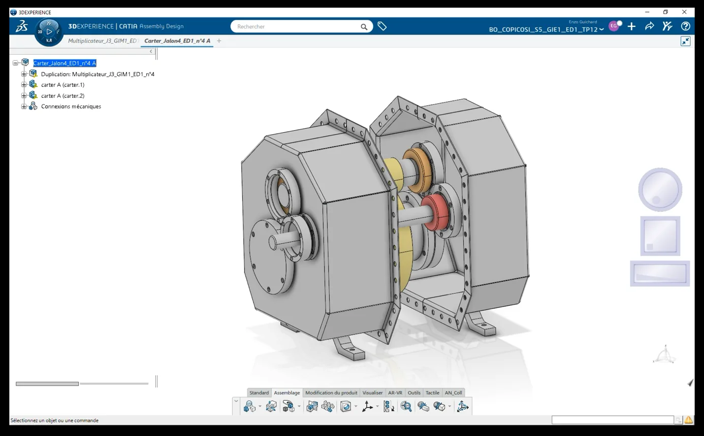
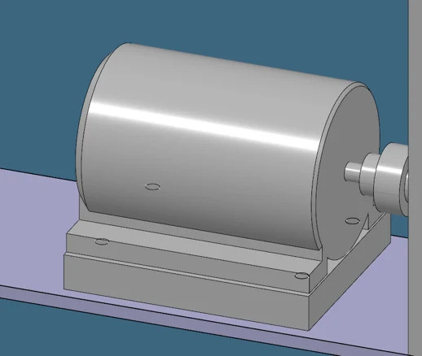
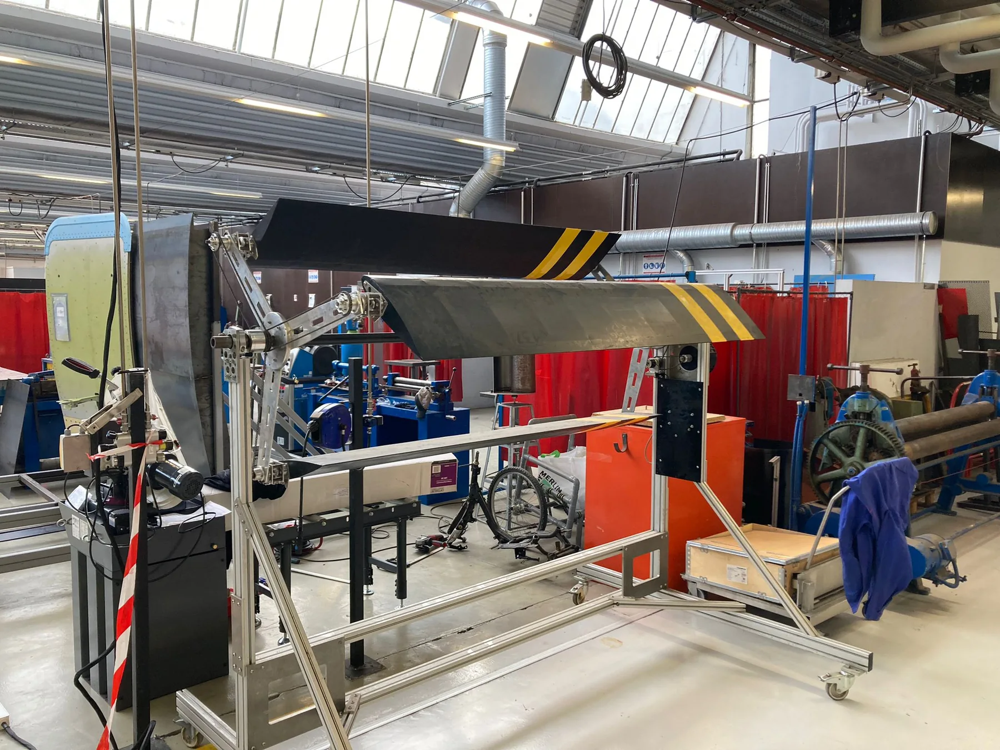
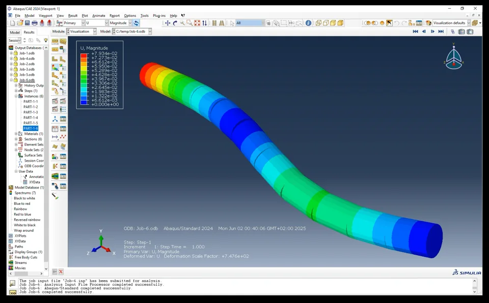

Mechanical transmission
Urban wind turbine
Sizing and analysing a speed-increasing drivetrain for a 4.6 kW wind-turbine design point, from gears and bearings to structural checks.
- Context
- Arts et Métiers · Bordeaux
- Period
- 2025
- My role
- Member of a five-student team
- Focus
- 3DEXPERIENCE · Abaqus · Gearbox design

A complete drivetrain concept
In a five-student design team, we developed a complete transmission concept between a slow wind-turbine rotor and an electrical machine. The study connected whole-system CAD, gear sizing, shaft and bearing calculations, and finite-element modelling.
Engineering as a team
I worked as one member of a five-student engineering team. We had to connect aerodynamic assumptions, transmission sizing, CAD, shaft and bearing choices, and structural checks into one assembly. Sharing intermediate calculations and explaining design choices across those topics was as important as producing each model.
At design reviews we compared assumptions, agreed interfaces and revised the assembly together. This gave me practice in technical discussion, dividing work, integrating the results and learning from teammates with different strengths. The CAD and calculations shown here are collective outputs, not individual claims.
From turbine to generator
Starting from a 13 m/s nominal wind-speed assumption, our team sized a belt stage and a two-stage spur-gear speed increaser. The selected tooth counts gave a calculated gearbox ratio of 13.984 and an output speed around 1,522 rpm at the chosen design point.
The assembly work made interfaces visible: blade and shaft connections, housing space, bearing positions and the route to the generator. We used detailed sub-assemblies to check how those decisions fitted together.



Calculations that guided the next iteration
We complemented the analytical sizing with Abaqus checks on shaft deformation and stress. The finite-element plot below helped us see where bending would concentrate and which geometry deserved the next design iteration.

The gearbox concept reached a coherent kinematic design. The structural checks also gave us a concrete list of refinements to make before manufacturing. That link between modelling and a design decision was one of the strongest outcomes of the study.
What the group work taught me
I learned how quickly a mechanical system becomes an interface problem. Gear ratios, shafts, bearings, housing and generator each depend on the assumptions made elsewhere in the team.
Regular technical exchanges helped us detect mismatches early, explain our choices and combine separate calculations into one shared model. It made me more comfortable asking for another perspective when a design decision affected several disciplines.